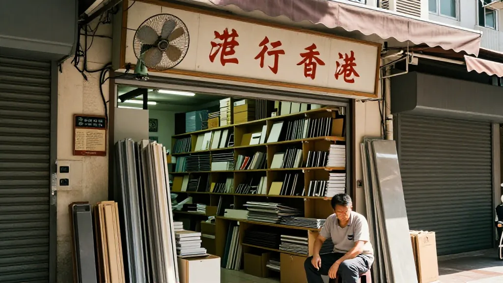
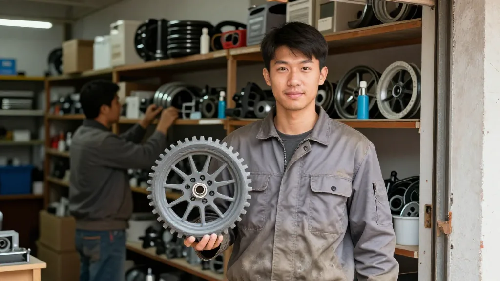

【鄭哥點評】 欄目：鄭哥博客點評
建材市場那句「很不好」，住建部三天前給咗答案

圖片由 AI輔助創作（Z-Image-Turbo）
鄭哥 Hany · 2026 年 9 月 23 日 · 下午 2 點
——建材老闆一句「很不好」，住建部三天前已經俾咗答案
昨天中午，我去了一趟建材市场。说实话，本来只是想随便转转，看看门窗和五金的行情，结果一杯茶没喝完，就听了一肚子实话。
走进陈老板那间铺头的时候，他正坐喺风扇底下打盹。铺面不大，两边堆满了门窗执手、合页、滑轨，地上还有几扇样板门。见到我，佢赶紧企起身，递过嚟一支烟，笑着讲，郑哥，好耐冇见，今日咩风吹你过嚟。
我就直接问佢，老陈，最近门窗五金生意点样。佢个笑容一下就收咗，摇摇头讲了四个字，很不好。呢四个字佢讲得好平静，唔系抱怨，似系已经接受咗好耐。
我问，生意差到咩程度。佢话，以前靠新楼盘，一栋楼交楼，成栋楼的门窗五金跟着走，量大，来钱快。而家新楼少咗好多，房地产没落咗，肯定连带住我哋。家下靠咩，靠人哋嚟补货。边个铰链坏咗，边个滑轮唔顺，装修师傅过嚟配返几个。复购率系强，但都系散单，一单几十蚊，一单百几蚊，要守住成间铺，真系唔容易。
正讲住，一个着住灰色工衣、裤脚沾住白灰的后生仔行入嚟，手里拎住一个坏咗的滑轮。老板，呢只轮有冇货，要四个。陈老板睇一眼，转身就喺架上捡咗四个出嚟，二十蚊。后生仔扫码俾钱，拎住就走，前后唔够两分钟。陈老板指住佢背影同我讲，睇到冇，就系呢啲，装修佬阿强，成日帮人翻新旧房，轮啊锁啊成日要换。呢啲就系我而家嘅衣食父母。
我问阿强，最近翻新多唔多。佢话，多，旧房多。新楼买唔起，咪将旧屋执下，换个门窗五金，换个锁，成间屋精神晒。一个业主咁讲，装一次修，住十年八年，下次再搵我，都唔知几时。陈老板喺旁边接话，系啊，一个人装修一次，差不多管十年二十年。所以我哋呢行，系传统生意，慢，一次买卖管好多年。
呢个时候，隔壁铺的梁叔行过嚟凑热闹。梁叔做五金二十几年，头发都白晒。佢一坐低就讲，郑哥，你做电子嘅，你哋唔同。你哋一部手机用两年就换，我哋一只合页用十年都唔坏。坏咗先有人嚟，唔坏就冇声冇气。我话，梁叔，电子都唔好过，华强北都静咗。佢笑住讲，起码你哋仲有新嘢出，年年有新款。我哋呢，款式十年都系咁，拼嘅就系边个守得耐。
一句话讲到我心入面。电子系快生意，靠新品续命。建材系慢生意，靠时间熬。两种唔好，唔系同一种唔好。
夜晚返到屋企，我刷手机，睇到三日前9月18日国新办那场发布会，住建部讲十五五住房建设的高质量发展。副部长陈绍旺讲咗一串话，其中两句一下击中我：房地产市场供求关系发生重大变化，房地产进入存量时代。房地产市场监管司司长张雪涛仲俾咗数字，二手房交易占比，2020年系27%，2025年到46%，今年前八个月，已经到52%。超过50%，就标志住进入存量时代。
我即刻谂起下昼陈老板那句房地产没落咗。原来佢喺铺头感受到的寒气，国家层面已经盖咗章。唔系佢一间铺唔好，系成个增量时代过去咗。以前系起新楼、交新楼、装新门窗，一条龙。而家系二手房交易过半，边个买咗二手房，咪要翻新，要换门窗五金。陈老板话靠补货顶住，顶的正正就系呢个存量。
发布会仲有两件事，同佢哋息息相关。一件系现房销售。张雪涛话，现房销售已经系大势所趋，一手交钱一手交货，所见即所得，从根本上防交付风险。呢个对建材系双刃剑，现房交得越规范，批量门窗需求越稳，但账期和质量要求一定更高，散铺想吃大单更难。第二件系公积金。新修订的住房公积金管理条例，9月20日正式实施，提取情形由6种加到9种，老百姓日常的装修住房、交物业费都可以提取。装修可以动用公积金，对陈老板系好消息，业主手头松动，翻新意愿就会强啲，补货单自然多啲。
我又查了今年前八个月的数据，房屋竣工面积同比下降23.7%，住宅竣工下降25.4%。东吴证券那份半年报话，装修建材二季度收入增速转负5.5%。深加工企业手头订单得翻八到十日，五年最低。数字冰冷，但同下昼铺头那一幕对得上：大单冇咗，散单撑住，唔敢备货，随用随采。
所以陈老板那句同我们电子不一样，我越谂越有味道。电子唔好，系技术换代快、价格战狠，但起码仲有AI终端、仲有出海、仲有新品讲故事。建材唔好，系十年一装的低频宿命，新楼冇咗，就只能等旧房翻新。一边系快，一边系慢。快的有快的焦虑，慢的有慢的煎熬。
临走那阵，陈老板同我讲，郑哥，我唔贪心，守住呢间铺，有口饭食就得。梁叔拍拍佢膊头，守咯，旧房咁多，门窗总会坏，坏咗就要换，换就要搵我哋。阿强喺门口探头入嚟补一句，系啊陈老板，下次滑轮再坏，我再嚟帮衬。全铺人都笑咗。
返程路上我一路谂，存量时代四个字，听落好大，但落到地面，就系呢啲：一个滑轮二十蚊，一只铰链十几蚊，一次翻新管十年。增量冇咗并唔等于需求冇咗，而系需求碎咗、散咗、慢咗。边个肯弯腰捡散单，边个把复购做成老关系，边个就喺存量里面活落去。
用心交朋友，才能把订单做完。我上次写WTS那篇讲过呢句，今日喺建材市场又应验一次。陈老板守的唔系货，系阿强呢啲装修佬的人情。十年二十年先装一次，但中间无数次补货，全靠平时的交情。电子也好，建材也好，增量过去之后，拼的都系同一件事：边个值得被记住，边个值得被回头搵。
订单是一时的，信任是一辈子的。这句话，建材佬比电子佬体会得更深。

圖片由 AI輔助創作（Z-Image-Turbo）
圖片由 AI輔助創作（Z-Image-Turbo）
圖片由 AI輔助創作（Z-Image-Turbo）
📞 合作聯繫
WhatsApp: +852 6641 7912
七善門科技 · 星辰算力
#建材市場 #門窗五金 #存量時代 #住建部 #二手房 #住房公積金 #舊房翻新 #外貿老炮兒 #鄭哥Hany #七善門科技 #星辰算力
[ZHENG GE REVIEW] Column: Hany Blog Review
Real-Estate Cold Hit Our Hardware Shop — Three Days Earlier, Beijing Already Knew
Image AI-assisted (Z-Image-Turbo)
Hany Zheng Ge · September 23, 2026 · 2:00 PM
— When the hardware shop said "pretty bad," Beijing had already given the answer three days earlier
An old hardware store sits quietly in a Kowloon back alley. Owner Mr. Chen leans against the door frame, a small fan spinning above his head. "How's business?" I ask. Four words: "Pretty bad." Not a complaint — a fact accepted long ago.
Twenty years ago, a freshly handed-over tower would drag in a wave of door handles, hinges, and sliding rails. Now new builds have thinned out. Demand has scattered into a thousand small jobs: a broken wheel here, a rusted hinge there. Forty yuan a pop, repeat orders slow but steady. This is how Mr. Chen still keeps the lights on.
Then a young worker in dusty grey walks in — one wheel, twenty yuan, scan-and-go. He is Mr. Qiang, a renovation handyman. Old flats dominate now; nobody buys new. One renovation holds for ten or twenty years, then everyone forgets you until something breaks again.
Across the aisle is Uncle Leung, twenty-plus years in hardware, hair gone white. "Your electronics aren't the same," he says. "You ship a new phone every year. My hinge lasts a decade. Breakage is my bread." I tell him Huaqiangbei is quiet too. He laughs. "At least you have new stories to tell. We have the same set of SKUs forever. The race is who survives longer."
Three days earlier, on September 18, Beijing held a State Council Information Office press conference. Vice Minister Chen Shaowang of the Ministry of Housing and Urban-Rural Development stated bluntly: "The supply-demand relationship in the real-estate market has undergone major changes. China has entered the era of stock housing." Director Zhang Xuetao of the Market Regulation Department gave the number: second-hand transactions went from 27% of total in 2020 to 46% in 2025, and over 52% in the first eight months of 2026. Above 50% is the threshold of the stock era.
Mr. Chen's cold wind finally had an official stamp. New-build chain — develop, hand over, fit out — is broken. Used flats are now the majority. Whoever buys one will renovate; renovating means new hardware. The scattered orders flowing into Mr. Chen's shop are exactly the pulse of that stock era.
Two more things from the same press conference are tied to his fate. First, the rise of existing-home sales ("现房销售"). What you see is what you get — fewer tail risks for buyers, but higher quality and longer payment terms demanded from suppliers. Small shops can't bite into big orders the way they used to. Second, the September 20 effective date of the revised Housing Provident Fund Management Regulations. Withdrawal scenarios expanded from six to nine — including home renovation and property-fee payments. Owners with loosened budgets will renovate more, and replenishment orders like Mr. Chen's will multiply.
The cold data matches the warm shop. Completion floor area year-on-year: –23.7%; residential completion: –25.4%. Dongwu Securities' mid-year report: renovation-materials revenue growth flipped to –5.5% in Q2. Deep-processing enterprises' order books: eight to ten days, a five-year low.
Mr. Chen's remark about electronics having it "different" stays with me. Electronics is a fast game — new chips, new stories, AI terminals, overseas expansion. Hardware is a slow game — one renovation holds a decade, and demand has merely been scattered, slowed, and decoupled. Fast or slow, both face the same pressure once the incremental era ends: the next customer is the one you already know.
Mr. Chen waves goodbye. "Not greedy," he says. "Just keep the shop open, keep my rice bowl." Uncle Leung claps his shoulder. "The old flats won't go anywhere. When handles break, people come back." Mr. Qiang pops in: "Mr. Chen, next broken wheel, I'm back." The whole shop laughs.
On the way back I keep thinking. The stock era is a big phrase, but on the ground it is exactly this: a twenty-yuan wheel, a ten-yuan hinge, one renovation every ten years. The increment is gone, the demand is not — it has merely shattered into pieces. Whoever bends down to pick them up, whoever turns repeat orders into long friendships, will survive the stock era.
Trust takes a lifetime. That sentence hits harder in hardware than in electronics.
Image AI-assisted (Z-Image-Turbo)
Image AI-assisted (Z-Image-Turbo)
Image AI-assisted (Z-Image-Turbo)
FAQ｜Common Questions
Q: How does the property "stock era" hit door-handle and hardware businesses?
A: New-build bulk orders shrink. Renovation of existing flats and small refill orders now dominate. Survival depends on repeat orders and old customer relationships.
Q: What does "现房销售" (existing-home sales becoming the norm) mean for suppliers?
A: One-off cash-and-carry, see-what-you-get — fewer delivery risks but tighter quality and payment terms, making big orders harder for small shops.
Q: How does the September 20 provident-fund reform tie to renovation?
A: Withdrawable scenarios expanded from 6 to 9 — covering home renovation and property-fee payments. Owners gain easier access to renovation funds, lifting refill demand for hardware shops.
Q: What is the biggest difference between hardware and consumer electronics?
A: Hardware is ultra-low frequency — a fitting lasts 10+ years, surviving on the stock-era "slow burn." Electronics turns over every 1–2 years and survives on new-product velocity. Once the incremental era ends, both must fight for repeat trust.
📞 Get in touch
WhatsApp: +852 6641 7912
Qishanmen Tech · Star Compute
#BuildingMaterials #DoorHardware #StockEra #MOHURD #SecondHandHousing #HousingProvidentFund #Renovation #ForeignTradeVeteran #HanyZhengGe #QishanmenTech #StarCompute